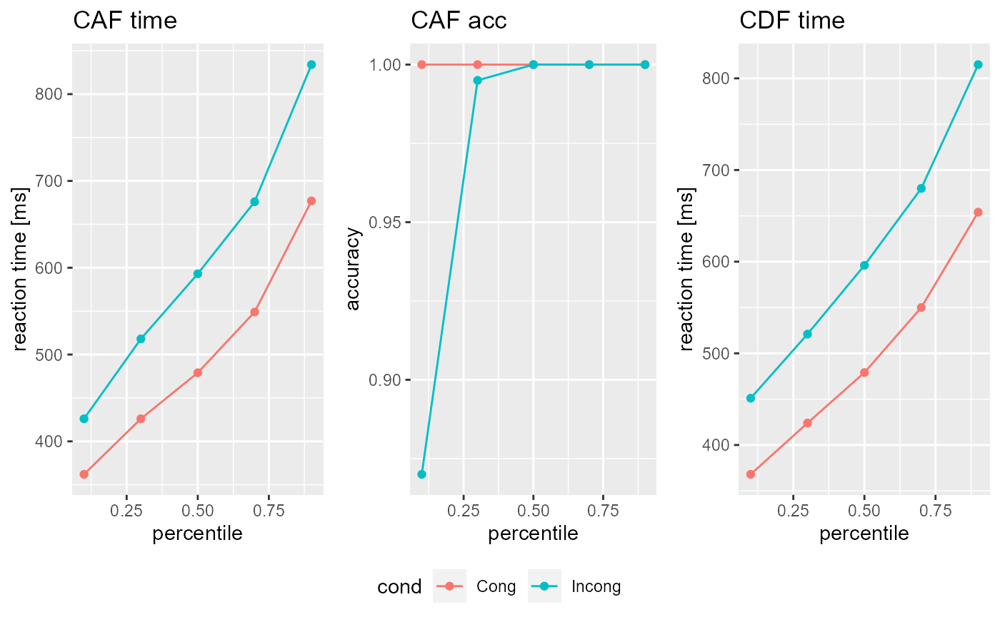

vignettes/Tutorials/Model_simulation.Rmd
Model_simulation.RmdHow to simulate in DDModeling
In order to simulate data in DDModeling you need a specified DDModel (see here for a tutorial).
library(DDModeling)
#> Lade nötiges Paket: data.table
DSTP <- DDModel(model="DSTP",task = "flanker",CDF_perc = c(0.1,0.3,0.5,0.7,0.9),CAF_perc = c(0.0,0.2,0.4,0.6,0.8,1.0))With that model simulation is straigthforward using Sim_DDModel().
Sim_DDModel() takes at least two arguments model and trials. The former specifies a DDModel object, the latter the number of trials per condition that should be simulated. It then returns a DDRep object, which can be inspected by simply calling it
some_data
#> CDF:
#> $Cong
#> cond perc time N
#> 1 Cong 0.1 378 100
#> 2 Cong 0.3 451 300
#> 3 Cong 0.5 506 500
#> 4 Cong 0.7 578 700
#> 5 Cong 0.9 709 900
#>
#> $Incong
#> cond perc time N
#> 1 Incong 0.1 449 99
#> 2 Incong 0.3 521 297
#> 3 Incong 0.5 591 496
#> 4 Incong 0.7 678 695
#> 5 Incong 0.9 826 893
#>
#>
#> CAF:
#> $Cong
#> cond perc time acc N_A N_B
#> 1 Cong 0.1 373 1 200 0
#> 2 Cong 0.3 450 1 200 0
#> 3 Cong 0.5 507 1 200 0
#> 4 Cong 0.7 579 1 200 0
#> 5 Cong 0.9 731 1 200 0
#>
#> $Incong
#> cond perc time acc N_A N_B
#> 1 Incong 0.1 436 0.970 194 6
#> 2 Incong 0.3 522 1.000 200 0
#> 3 Incong 0.5 590 0.995 199 1
#> 4 Incong 0.7 677 1.000 200 0
#> 5 Incong 0.9 852 1.000 200 0
#>
#>
#> Parameter:
#> Ter a c mu_t mu_f mu_RS2 mu_SS
#> 1 0.1558071 0.26814 0.24524 0.1000472 0.1216029 0.487467 0.6919071or using plot()

Note that Sim_DDModel() will initialize a simulation by random as the default, meaning that the parameters inside the model that are used for the simulation will be uniformly drawn from the parameter domains specified in the model. If you want to conduct a simulation using specific parameter values you need to specify the parameters under the parameter argument! This argument takes a data.frame, which coloumnnames need to be identical (in name and order!) to the parameters specified in the model!
custom_parameter <- data.frame(Ter= 0.2, a= 0.17, c=0.18 ,mu_t= 0.08, mu_f= 0.09, mu_RS2= 0.29, mu_SS= 0.5)
custom_data <- Sim_DDModel(model = DSTP,trials = 1000L,parameter = custom_parameter)
custom_data@PAR
#> Ter a c mu_t mu_f mu_RS2 mu_SS
#> 1 0.2 0.17 0.18 0.08 0.09 0.29 0.5
plot(custom_data)
If you want to conduct multiple simulations with different parameters simply add rows to your data.frame! If you need multiple samples of these simulations specifiy the simulations argument. Note however that Sim_DDModel() will return then a list of DDRep objects! Additionally, if you do not specify the parameter argument simulations=n>1 will lead to n randomly drawn parameter like in the above example, however if you do specify it, simulations=n will lead to n simulations for each parameter set!